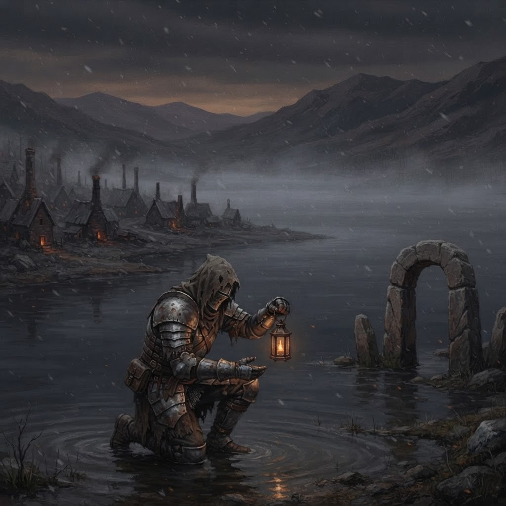
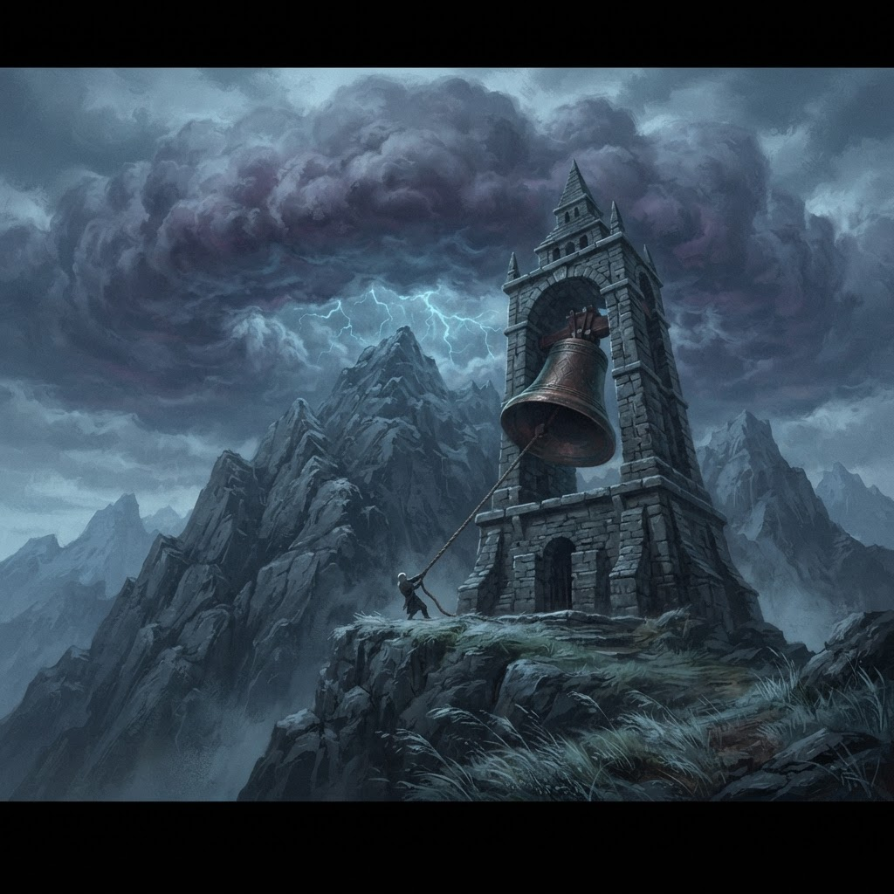
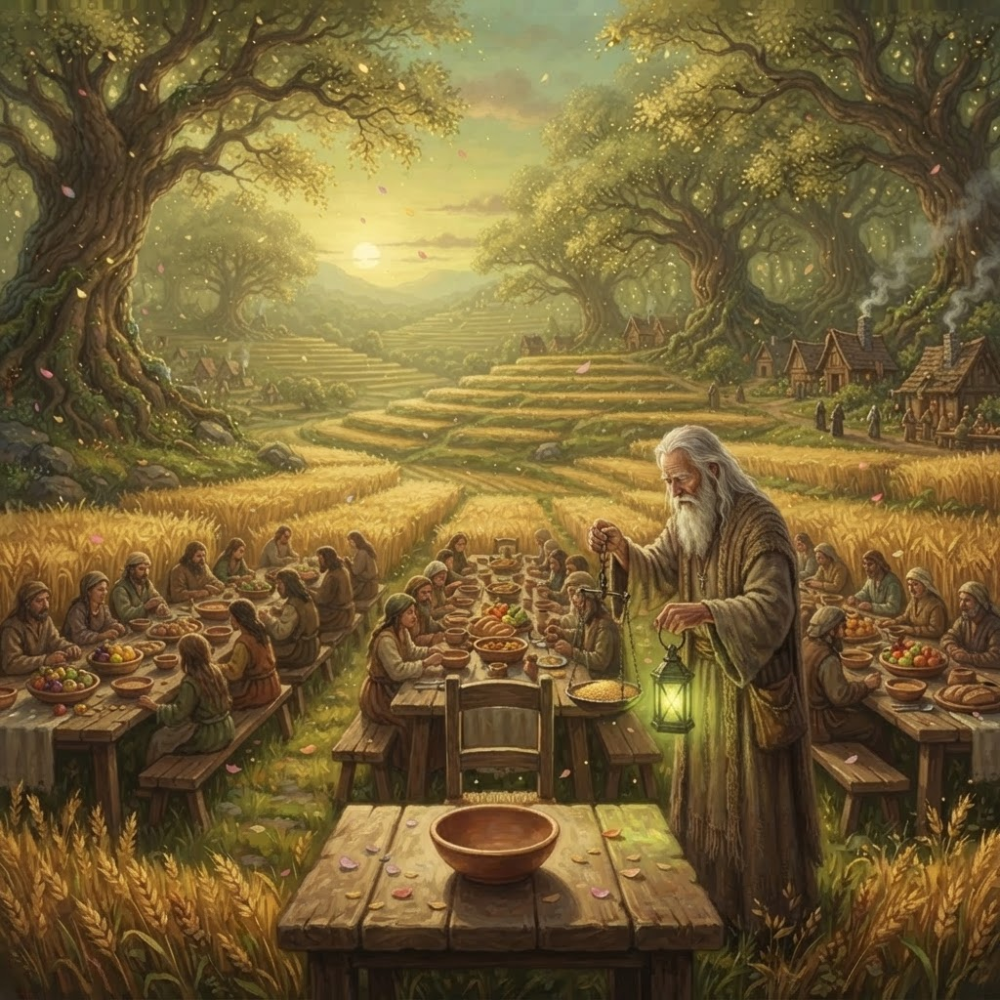
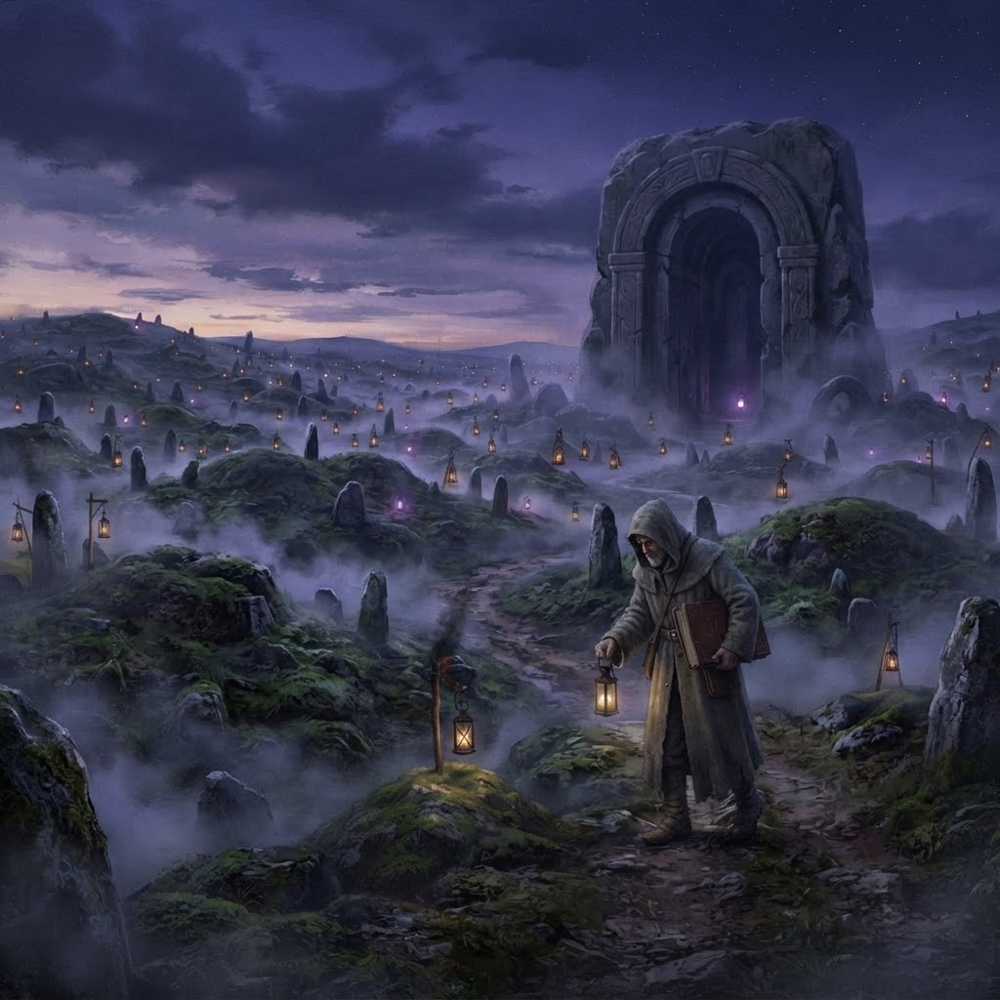
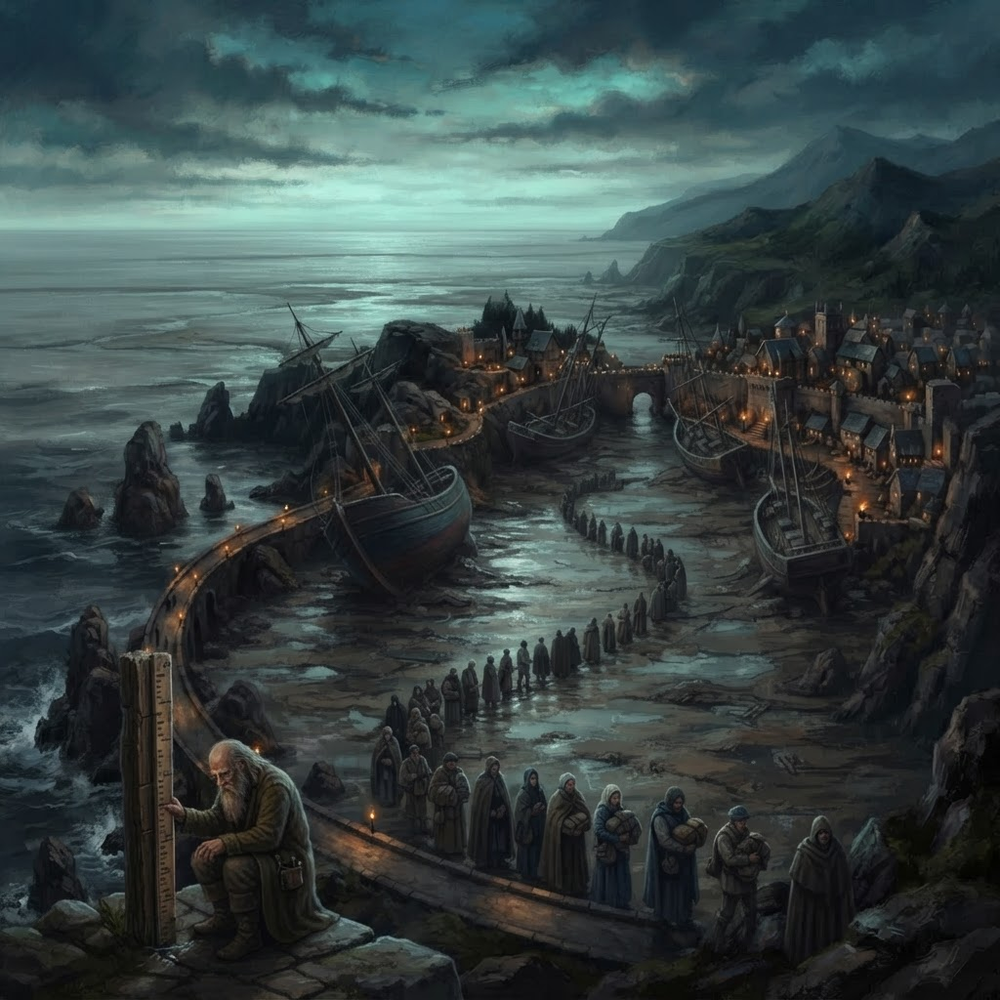
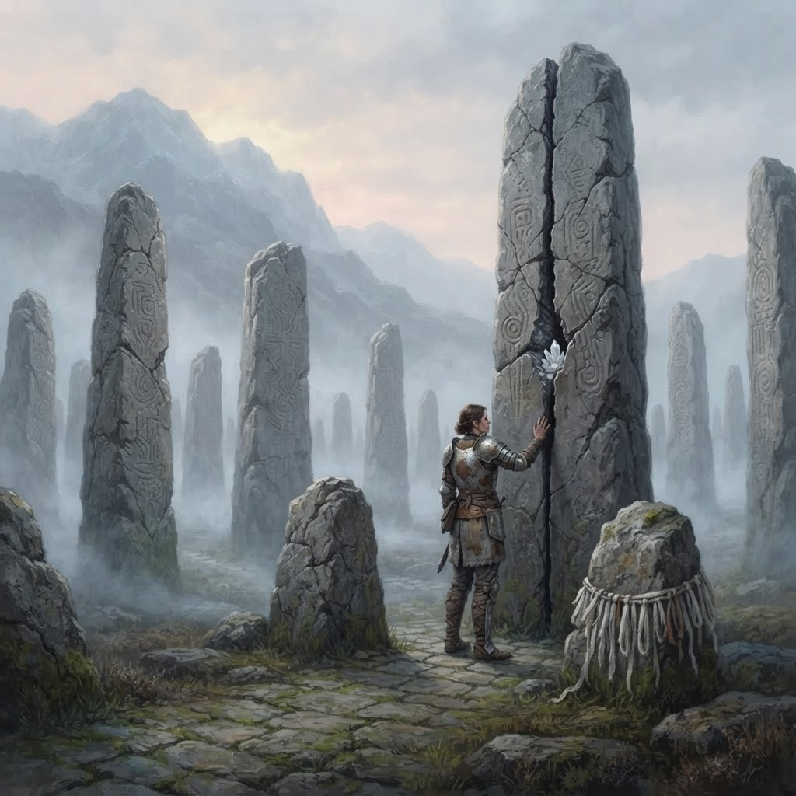

SIX REALMS — SIX SCENES FROM THE GAME — PAINTERLY KEYFRAMES

Dawn fog on the black glassmere. A pilgrim kneels at the waterline with the last lit lantern in the village — the offering that opens the way.

The great bell swings under a wall of storm that will not break. The sky stopped answering a generation ago — someone must ring until it does.

Golden hour over the terraces, and one chair kept empty at every table. The grain is weighed against a lantern — the Debt is always paid.

Hundreds of hand-lanterns watch over the barrows, one for every kept promise. The keeper walks the rows tonight — one light has gone dark.

The sea has withdrawn past the breakwater and no one will speak of why. The harbormaster reads the waterline, and the line grows longer.

A ring of vow-marked monoliths on the high moor. The oldest promise in the six realms is carved into that tallest stone — and it is cracking.